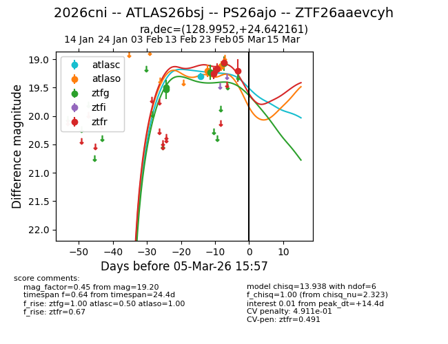
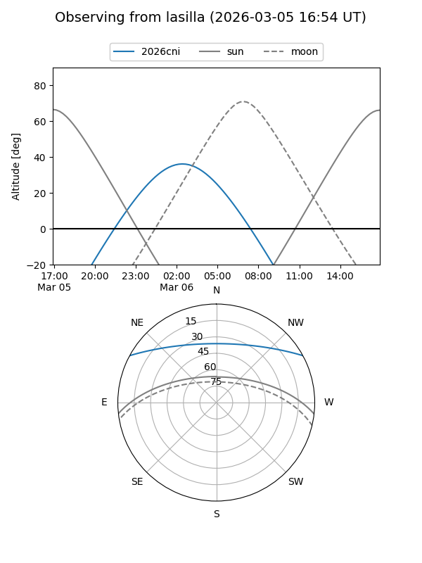
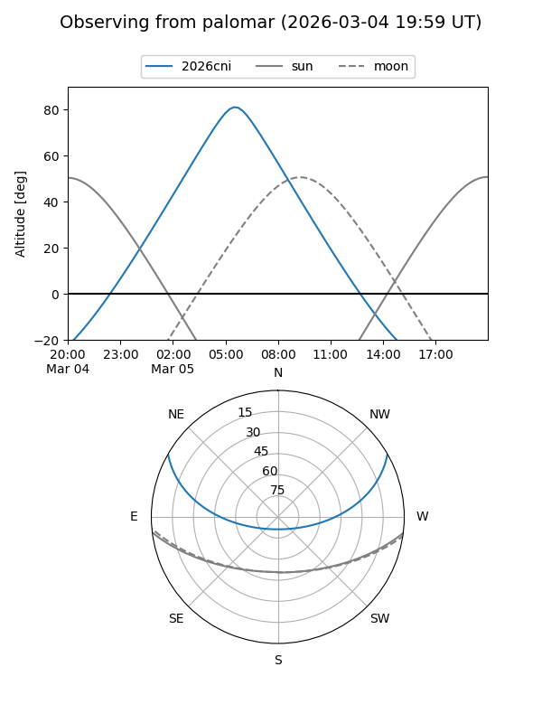
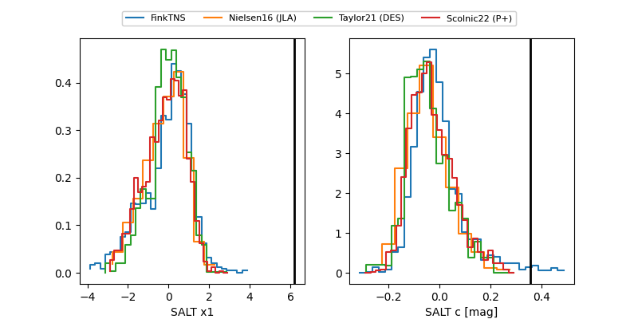

2026cni
Target 2026cni at 2026-03-05 15:58
Aliases and brokers:
FINK: link
Lasair: link
ALeRCE: link
TNS: link
YSE: link
alt names
ZTF26aaevcyh (ztf,fink_ztf)
2026cni (tns,yse)
ATLAS26bsj (atlas)
PS26ajo (panstarrs)
Coordinates:
equatorial (ra, dec) = 128.9952,+24.64216
equatorial (HMS+DMS) = 08:35:58.84,+24:38:31.78
galactic (l, b) = (199.9236,+33.12433)
Flags:
likely cv
Photometry:
last atlasc=19.30, atlaso=19.12, ztfg=19.08, ztfr=19.20
1 atlasc, 2 atlaso, 4 ztfg, 4 ztfr detections
Lightcurve

Visibility


Additional plots
